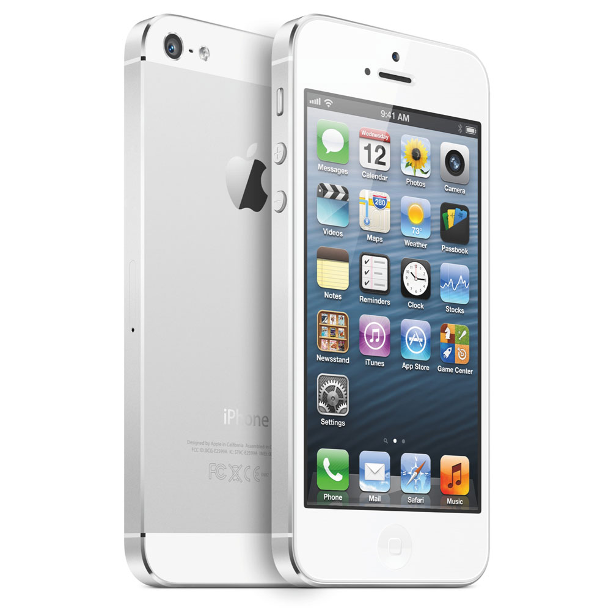

DeviceShop
IPhone 5
iPhone 5 оснащен 4-дюймовым дисплеем Retina, с разрешением 1136 x 640 пикселей. Разрешающая способность нового экрана составляет прежние 326 ppi. Кроме того, Apple на 44% улучшила цветопередачу экрана. iPhone 5 способен работать в сетях GPRS, EDGE, EV-DO, HSPA, HSPA+, DC-HSDPA и LTE. В сетях HSPA+ устройство поддерживает скорость до 21 Мбит/с, DC-HSDPA - до 42 Мбит/с, LTE - до 100 Мбит/с. Для поддержки всех технологий связи используется один модем. Смартфон способен автоматически переключаться с одной технологии на другую в режиме реального времени. Поддерживается двухканальная передача данныхпо Wi-Fi 802.11 a/b/g/n с максимальной скоростью 150 Мбит/с
Характеристика товара
Apple iPhone стал еще быстрее и вместе с тем изящнее. Толщина Apple iPhone 5 – всего 7,6 миллиметра, а вес – около 112 граммов, что на 18% тоньше и на 20% легче по сравнению с iPhone 4S. Своего владельца модель также порадует широчайшими возможностями, увеличенным дисплеем, мощным аккумулятором, новейшими технологиями и многим другим.
- Экран большего размера. Apple iPhone 5 оснащен 4-дюймовым дисплеем Retina, который увеличился в длину и стал еще ярче. Число пикселей стало больше на 18%, разрешение экрана составляет 1136х640 точек. Теперь на нем отображается больше информации, появилась возможность разместить больше приложений на главном экране, но при этом им очень удобно пользоваться одной рукой – набирать тексты, листать страницы. Кроме того, iPhone 5 позволяет смотреть широкоэкранные фильмы в HD-качестве без горизонтальных полос вверху и внизу экрана.
- Повышенная производительность.За счет нового процессора A6 практически все операции на iPhone 5 выполняются почти в два раза быстрее по сравнению с процессором A5. Также увеличилась производительность графической платы. При этом обеспечивается экономия заряда аккумулятора. Устройство способно проработать до 8 часов в режиме разговора и до 225 часов в режиме ожидания.
- Новые возможности камеры. Камеру iSight снабдили новыми функциями. Например, благодаря панорамной съемке теперь в кадр поместится все, что задумал автор. Одним движением угол обзора расширяется до 240 градусов. Кроме того, фотографии можно снимать на 40% быстрее, а качество съемки при недостаточном уровне освещения повысилось. Также усовершенствована функция стабилизации видео.
- Революционные наушники Apple EarPods. При разработке новых наушников за основу взяли не конструкцию динамика, а устройство человеческого уха, благодаря чему появились Apple EarPods, которые отличаются удобством использования и высоким качеством звука.
- Функциональный разъем Lightning. Apple iPhone 5 оборудован более компактным, прочным и функциональным разъемом Lightning, который пришел на смену 30-контактному разъему. Он двусторонний, поэтому проблем при подключении не возникнет.
- Улучшенные карты. Найти дорогу будет еще удобнее с помощью нового приложения "Карты", которое основано на векторном ядре, за счет чего графика и текст невероятно подробны даже при увеличении масштаба. Приложение также предоставляет возможность построения маршрутов, информацию о дорожном трафике и пошаговые голосовые инструкции.
Подробное описание товара
| Общие характеристики | |
| Тип | Смартфон |
| Операционная система | IOS 6 |
| Количество sim-карт | 1 |
| Тип sim-карты | nano SIM |
| Вес | 112 г |
| Размер(Ш*В*Т) | 58.6x123.8x7.6 мм |
| Экран | |
| Тип экрана | цветной, сенсорный |
| Диагональ | 4 дюйм. |
| Размер изображения | 1136x640 |
| Число пикселей на дюйм (PPI) | 326 |
| Тип сенсорного экрана | мультитач, емкостный |
| Мультимедия | |
| Разрешение основной (тыловой) камеры | 8 МП |
| Макс. разрешение видео | 1920x1080 |
| Макс. частота кадров видео | 30 кадров/с |
| Фронтальная камера | есть, 1.2 МП |
| Аудио | MP3, AAC, WAV |
| Разъем для наушников | 3.5 мм |
| Связь | |
| Стандарт | GSM 900/1800/1900, 3G, 4G LTE |
| Интерфейсы | Wi-Fi, Bluetooth 4.0, USB |
| Спутниковая навигаци | GPS/ГЛОНАСС |
| Память и процессор | |
| Процессор | Apple A6, 1200 МГц |
| Количество ядер процессора | 2 |
| Объем встроенной памяти | 16 Гб |
| Объем оперативной памяти | 1 Гб |
| Питание | |
| Тип аккумулятора | Li-Ion |
| Аккумулятор | несъемный |
| Время работы в режиме разговора | 8 ч |
| Время работы в режиме ожидания | 225 ч |
| Время работы в режиме прослушивания музыки | 40 ч |
| Тип разъема для зарядки | Lightning |